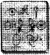

KOCASININ ortadan kaybolması Angeline Fowl’u derinden etkilemişti. Odasına kapanmış, dışarı çıkmayı reddediyordu. Hatıralarına sığınmıştı, geçmişle ilgili hayalleri gerçek yaşama yeğliyordu. Oğlu İkinci Artemis, elf Holly Short’la bir antlaşma yapmamış olsa hiç iyileşebilir miydi, bilinmez: peri polisinden çaldığı fidye altınının yarısına karşılık, annesinin ruh sağlığı. Annesi tam anlamıyla iyileştikten sonra Artemis Fowl tüm çabalarını babasının yerini bulmaya yoğunlaştırıp gerek yerel haber alma kanallarıyla, gerekse İnternet yoluyla araştırma yapan şirketlerle anlaşarak, aile servetinin büyük bölümünü Rusya yolculuklarına yatırmıştı.
Genç Artemis, Fowller’e özgü açgözlülüğe fazlasıyla sahipti. Öte yandan, namuslu ve güzel bir kadın olan annesi iyileştikten sonra dahice planlarını gerçekleştirmek gittikçe güçleşmişti. Bunlar, babasının araştırmaları için gerekli parayı sağlayacak planlardı.
Oğlunun bu tutkusundan çok endişelenen ve geçirdiği son iki yılın zihninde yarattığı etkilerinden korkan Angeline, on üç yaşındaki oğlunu tedavi ettirmek için okulun rehberlik öğretmenine götürdü.
Onun için üzülüyor olmanız gerekirdi. Yani rehberlik öğretmeni için...
ST BARTLEBY'S GENÇ BEYEFENDİLER
OKULU
WİCKLOW İLÇESİ, İRLANDA, GÜNÜMÜZ
Doktor Po yumuşak koltuğuna yaslandı ve önünde duran sayfayı hızla gözden geçirdi.
“Pekala, Sayın Fowl, biraz konuşalım, olur mu?” Artemis derin bir iç çekip geniş, solgun alnının üzerine düşen koyu renkli saçlarını geriye yatırdı. İnsanlar kendisininki gibi bir zekânın incelenemeyeceğini ne zaman anlayacaklardı acaba? Bu danışmandan çok daha fazla sayıda, psikoloji kitabı okumuştu. Hatta Ruhbilimciler Gazetesinde Doktor F. Roy Dean Schlippe takma adıyla bir makale bile yayınlamıştı.
“Elbette, Doktor. Sandalyeniz hakkında konuşalım. Kraliçe Viktorya döneminden mi?”
Po koltuğun deri kolçağını şefkatle okşadı. “Evet, doğru sayılır. Kuşaktan kuşağa geçen bir aile yadigârı. Büyükbabam onu bir Sotheby’s müzayedesinden almış. Görünüşe göre, bir zamanlar sarayı süslüyormuş. Kraliçenin gözbebeğiymiş.”
Artemis’in dudakları küçük bir gülümsemeyle gerildi, bir santimetre kadar. “İlginç, Doktor. Genellikle sarayda taklitlere yer yoktur.”
Po aşınmış deriyi sıkıca kavradı. “Sahte mi? Sizi temin ederim, Sayın Fowl, bu kesinlikle gerçek.”
Artemis koltuğu daha yakından incelemek için eğildi. “Ustaca yapılmış, kabul ediyorum. Ama şuraya bakın.” Po’nun bakışları oğlanın parmağını izledi. “Bu raptiyelere bakın. Baş tarafındaki çapraz deseni görüyor musunuz? Makinede yapılmış. En fazla bin dokuz yüz yirmilerde. Büyükbabanız dolandırılmış. Ama ne fark eder ki? Sandalye, sandalyedir. Önemsiz bir mal, öyle değil mi, Doktor?”
Po hayal kırıklığı belli olmasın diye, öfkeyle bir şeyler çiziktirdi. “Evet, Artemis, çok zekice. Tıpkı dosyanda yazanlar gibi. Küçük oyunlarından birini oynuyorsun. Şimdi, sana geri dönelim mi, ne dersin?”
İkinci Artemis Fowl pantolonundaki kırışıklığı düzeltti. “Bir sorunumuz var, Doktor.”
“Gerçekten mi? Ne olabilir acaba?”
“Sorun, bana sormak istediğiniz her sorunun, ders kitaplarındaki yanıtını bildiğim.”
Doktor Po tam bir dakika boyunca önündeki kâğıda not aldı. “Gerçekten de bir sorunumuz var, Artemis. Ama sorun bu değil,” dedi en sonunda. ,
Artemis az daha gülümseyecek gibi oldu. Hiç kuşkusuz, doktor ona önceden tahmin edilebilir, bir başka kuram yakıştıracaktı. Acaba bugün ona hangi hastalık uygun görülecekti? Kişilik bölünmesi ya da belki patolojik yalancılık?
“Sorun hiç kimseye insanca davranacak kadar saygı duymuyor olman.”
Bu açıklama Artemis’i çok şaşırtmıştı. Bu doktor öbürlerinden daha akıllıydı. “Bu çok saçma. Ben çok sayıda insana büyük saygı duyuyorum.”
Po bakışlarını defterinden kaldırmadı. Gerçekten mi? Kime, örneğin?”
Artemis bir an düşündü. “Örneğin Albert Einstein’a. Kuramları genel olarak doğruydu. Sonra, Yunanlı matematikçi Arşimet’e.”
“Peki ya tanıdıkların arasında?”
Artemis iyice düşündü. Aklına hiç kimse gelmedi. , “Nasıl yani? Örnek veremiyor musun?”
Artemis omuz silkti. “Tüm yanıtlara sahip gibisiniz, Doktor Po. Neden siz söylemiyorsunuz?”
Po diz-üstü bilgisayarında bir pencere açtı. “Bu olağanüstü. Bunu her okuyuşumda...”
“Yaşam öyküm sanırım?”
“Evet, pek çok şeyi açıklıyor.”
“Ne gibi?” diye sordu Artemis, merakını gizleyemeyerek.
Doktor Po bilgisayarından bir çıktı aldı.
“İlk olarak, şu ortağın, Kâhya. Bir koruma sanırım. Senin gibi aşırı duyarlı bir oğlan için pek uygun bir arkadaş değil. Sonra annen var. Bence harika bir kadın ama seni kesinlikle idare edemiyor. Son olarak da, baban var.
Buna göre, hayattayken bile çok başarılı bir baba rolü oynayamamış. ”
Sözleri acı veriyordu ama Artemis’in ne kadar etkilendiğini doktora göstermeye niyeti yoktu. “Dosyanız hatalı, Doktor,” dedi. “Babam hayatta. Kayıp olabilir ama hayatta.”
Po kâğıda baktı. “Gerçekten mi? Neredeyse iki yıldır kayıp olduğunu sanıyordum. Zaten bu yüzden mahkemeler onu yasal olarak ölü ilan etmiş.”
Artemis’in yüreği hızla attığı halde, sesinde duygudan eser yoktu. “Mahkemelerin ya da Kızıl Haç’ın ne dediği umurumda bile değil. O hayatta ve onu bulacağım.”
Po bir şeyler daha karaladı.
“Ama baban geri dönecek olsa bile, ne olur ki?” diye sordu. “Onun izinden mi gideceksin? Onun gibi bir suçlu mu olacaksın? Belki de öylesin zaten?”
“Babam suçlu değil,” diye belirtti Artemis, hırçınca. “Tüm mal varlığımızı, yasal girişimlere kaydırıyordu. Murmansk işi kesinlikle dürüst bir işti.”
“Sorulardan kaçıyorsun, Artemis,” dedi Po.
Ama Artemis bu soru yağmurundan usanmıştı. Küçük bir oyun oynama zamanıydı. “Neden, Doktor?” dedi Artemis, şaşkınlık içinde. “Bu duyarlı bir konu. Biliyorsunuz ki şu an bir ruhsal çöküntü yaşıyor olabilirim.” “Sanırım olabilirsin,” dedi Po, önemli bir gelişme sezmiş gibi. “Gerçekten öyle mi?”
Artemis yüzünü ellerinin arasına aldı. “Sorun annem, Doktor.”
“Annen mi?” diye onu yüreklendirdi Po, sesindeki heyecanı bastırmaya çalışarak. Artemis daha bu yıl içinde, St Bartleby’deki yarım düzine danışmanı emekliye ayırmıştı bile. Gerçeği söylemek gerekirse, Po da eşyalarını toplamak üzereydi. Oysa şimdi...
“Annem, o...”
Po sahte Viktorya stili sandalyesinde öne doğru eğildi. “Annen, evet?”
“Bu gülünç terapiye katlanmam konusunda beni zorluyor, üstelik de okulun sözde rehber danışmanlarının, diplomalı, başarısız toplumsal reformculardan hiçbir farkları yokken.”
Po iç geçirdi. “Çok güzel, Artemis. Senin istediğin gibi olsun ama sorunlarından kaçmayı sürdürürsen, asla rahat edemezsin.”
Artemis’in cep telefonunun titreşimi, onu analizin geri kalanından kurtardı. Çalan, şifreli, güvenli bir hattı. Yalnızca tek bir kişide numarası vardı. Çocuk telefonu cebinden çıkartıp küçük kapağını açtı. “Evet?”
Ahizeden Kâhya’nın sesi duyuldu. “Artemis, benim.” “Başka kim olabilirdi? Burada, bir şeyin tam ortasındayım.”
“Bir mesaj aldık.”
“Evet. Nereden?”
“Tam olarak bilmiyorum. Ama Fowl Star ile ilgili.” Artemis’in omuriliğinden bir elektrik akımı geçti. “Neredesin?”
“Ana girişte.”
“Pekala. Oraya geliyorum.”
Doktor Po gözlüklerini çıkardı. “Konuşmamız henüz tamamlanmadı, genç adam. Her ne kadar kabul etmesen de bugün biraz ilerleme kaydettik. Şu an çıkıp gidersen, müdüre haber vermek zorunda kalacağım.”
Artemis uyarıdan etkilenmemişti. Şu an başka bir yerdeydi. Teninde bir elektrik akımının vızıldadığını hissetti. Bu bir şeyin başlangıcıydı. Bunu hissedebiliyordu.